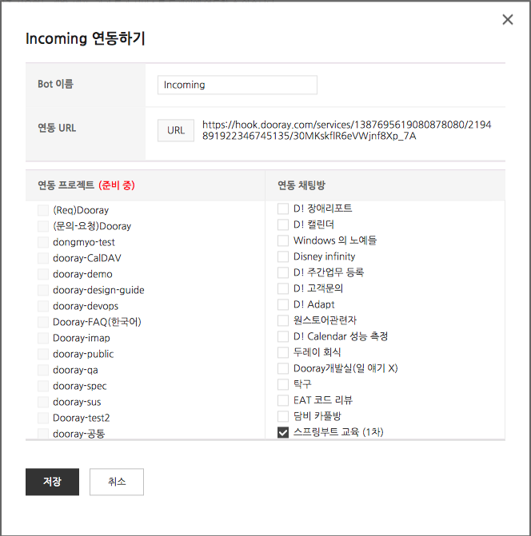

Spring Boot Custom Starter 개발 실습
1. 개요
2. Dooray! 메신저 Hook Url 얻기
2.1. Dooray! 메신저 Hook URL 생성
3. 실습용 Project 다운로드
4. Project의 구조
5. 연관관계 설정
6. Repository 생성
7. 어플리케이션에서의 사용
8. Pagination 구현 수정
9. 불필요한 mybatis 관련 파일 삭제
10. 정리
Spring Boot Custom Starter 개발 실습
Docs
»
2. Dooray! 메신저 Hook Url 얻기
2. Dooray! 메신저 Hook Url 얻기
¶
2.1. Dooray! 메신저 Hook URL 생성
¶
두레이 (nhnent.dooray.com) > 설정 > 서비스 연동 > 서비스 추가 > Incomming > 연동 채팅방 에서 연동하고 싶은 채팅방을 하나 선택합니다.

URL 버튼을 클릭하여 연동 URL 을 클립보드로 복사합니다.
연동 URL은 실습 마지막에 사용해야 합니다. 메모장에 저장해 둡니다.